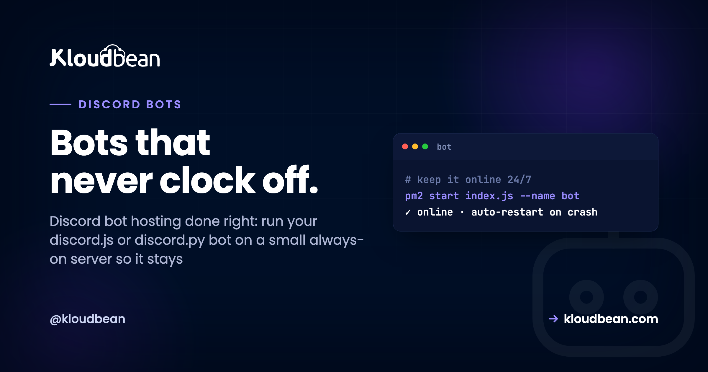

Discord Bot Hosting: Keep Your Bot Online 24/7

You built a Discord bot, it ran great on your laptop, then you closed the lid and it went quiet. Every bot maker hits that wall. A bot has to run somewhere that never sleeps, and your laptop isn't it. Good Discord bot hosting comes down to one thing: a small always-on server that keeps a long-running process alive, restarts it when it crashes, and comes back up after a reboot.
Not a website. Not a free tier that dozes off after 15 idle minutes. This walks through the whole thing, discord.js and discord.py, getting the token out of your code, a real process manager, where a bot keeps its data, and what it actually costs (spoiler: less than a lunch).
A Discord bot holds a live WebSocket to Discord's gateway, so it needs to run 24/7. Put it on a small always-on server, keep the process alive with pm2 (Node) or systemd (Python), and read the bot token from an environment variable, never from the code. Free tiers that sleep will keep knocking it offline. On Kloudbean you deploy from Git, set DISCORD_TOKEN in the console, and the platform keeps the process running and restarts it on crash or reboot.
What Discord bot hosting actually needs
Start with the one idea that makes the rest obvious: a bot is not a website. A website sits and waits for visitors to connect to it. A Discord bot does the opposite. It reaches out to Discord's gateway, opens a WebSocket, and holds that connection open, listening for events (a message, a slash command, someone joining a voice channel). It sends a heartbeat every ~41 seconds so Discord knows it's still there.
Two consequences fall out of that, and they shape every hosting decision:
- No inbound web traffic. Nobody's browser connects to your bot. So it needs no domain, no port open to the world, no SSL certificate. That's less to set up than a normal web app, not more.
- The process must never stop. The moment your bot's process dies, the WebSocket drops and the bot shows offline in every server it's in. So what you're really hosting is a persistent background process. A worker. It just has to keep running.
That single requirement, "keep this process running forever," is the whole game. Everything below is about meeting it cheaply and reliably. It's the same constraint that shapes hosting a Telegram bot with polling or webhooks, so if you run bots on both platforms the hosting decisions rhyme.
Why free and serverless tiers keep dropping your bot
People try to host a bot for free, watch it go offline every few hours, and assume they wrote a bug. Usually they didn't. The host is the problem.
Free app tiers and serverless functions are built around one assumption: your app is a website that only needs to wake up when a request arrives. So they sleep idle apps to save money, and they spin functions down between HTTP requests. That's great for a landing page. It's fatal for a bot, because a bot has no inbound HTTP requests to wake it. It's the outbound connection that matters, and a sleeping process can't hold one open.
So the bot sleeps, the gateway connection drops, Discord marks it offline, and your !ping command gets silence. A cold start later it might reconnect, then sleep again. This is the single clearest case I know where "free hosting that sleeps" is simply the wrong tool. A bot needs the opposite of sleep. Here's how the options actually stack up:
| Where you run it | Stays connected 24/7? | Why |
|---|---|---|
| Your laptop | No | Sleeps with the lid, dies when you reboot or lose wifi. Fine for testing, nothing more. |
| Free tier that sleeps | No | Spins down after idle minutes. No inbound request ever wakes a bot, so it stays down. |
| Serverless function | No | Runs per-request then stops. Can't hold a persistent WebSocket open. Wrong shape entirely. |
| Small always-on server | Yes | A process that runs continuously, supervised so it restarts on crash and reboot. Exactly what a bot wants. |
If you want the longer version of that argument, we wrote is free hosting worth it and free tier vs a cheap VPS. For a bot, the short answer is: a couple of dollars beats free every time, because free means offline.
How the connection stays alive
Here's the shape of what you're keeping running. The bot opens one long WebSocket to Discord, keeps it warm with heartbeats, and a process manager sits behind it ready to relaunch the moment it ever falls over.
Get the token out of your code first
Before anything ships, one fix that isn't optional: your bot token cannot live in your code. The token is the full password to your bot. Anyone who gets it can run your bot, read what it can read, and abuse it. Bots get hijacked constantly because a token was committed to a public GitHub repo and a scraper found it within minutes.
So read it from an environment variable, and never commit it. In discord.js that's process.env.DISCORD_TOKEN. In discord.py it's os.environ["DISCORD_TOKEN"]. Add .env to your .gitignore and set the real value on the server instead. If a token ever does leak, you regenerate it in the Discord Developer Portal and update one environment variable. No code change. We go deeper on this in environment variables, done right.
A tiny bot you can actually deploy
Here's a minimal bot in both popular libraries. Nothing fancy. It logs in, prints a line when it connects, and replies to !ping. The important detail is the last line: the token comes from the environment.
Node.js (discord.js)
// index.js: a minimal discord.js bot
import { Client, GatewayIntentBits } from "discord.js";
const client = new Client({
intents: [GatewayIntentBits.Guilds, GatewayIntentBits.GuildMessages, GatewayIntentBits.MessageContent],
});
client.once("ready", () => {
console.log(`Logged in as ${client.user.tag}`);
});
client.on("messageCreate", (msg) => {
if (msg.content === "!ping") msg.reply("pong");
});
// token from the environment, never hard-coded
client.login(process.env.DISCORD_TOKEN);Python (discord.py)
# bot.py: a minimal discord.py bot
import os, discord
intents = discord.Intents.default()
intents.message_content = True
client = discord.Client(intents=intents)
@client.event
async def on_ready():
print(f"Logged in as {client.user}")
@client.event
async def on_message(message):
if message.content == "!ping":
await message.channel.send("pong")
client.run(os.environ["DISCORD_TOKEN"])Declare your dependencies so the server can install them: a package.json for Node (discord.js), a requirements.txt for Python (discord.py). Push the whole thing to a Git repo. Private is the right call for a bot. That repo is how the server gets your code, and how you'll ship updates later.
Keep it alive: PM2 for Node, systemd for Python
Running node index.js in your terminal works until you close the terminal. Then it stops. A process manager fixes that: it runs your bot in the background, restarts it if it crashes, and brings it back after the server reboots. This is the step that turns "runs" into "runs 24/7."
Node with PM2
PM2 is the standard supervisor for Node processes, and it handles multiple processes cleanly if you run more than one bot.
npm install
pm2 start index.js --name my-bot
pm2 save
pm2 startup # makes PM2 (and your bot) relaunch on server reboot
pm2 logs my-bot # tail the bot's outputPython with systemd
On Linux, systemd does the same job for a Python bot. A tiny unit file supervises it, and Restart=always is the line that keeps it up. Keep the token in a locked-down env file, not in the unit.
# /etc/systemd/system/mybot.service
[Unit]
Description=My Discord bot
After=network.target
[Service]
WorkingDirectory=/home/youruser/mybot
EnvironmentFile=/etc/mybot.env # a chmod 600 file holding DISCORD_TOKEN=...
ExecStart=/usr/bin/python3 bot.py
Restart=always
RestartSec=5
[Install]
WantedBy=multi-user.targetsudo systemctl enable --now mybot
journalctl -u mybot -f # watch the logsOn a managed platform you often don't touch either directly. You hand it a start command (node index.js or python bot.py), and the platform supervises the process for you: keeps it running, restarts it on a crash, brings it back after a reboot. Same outcome, less plumbing. Node bots get PM2 multi-process handling out of the box.
Where a bot keeps its memory
A bot that stores nothing can hold state in a variable. The catch: that variable is gone the instant the process restarts, which (see above) is a thing you specifically designed to happen often. So the moment your bot needs to remember anything past a restart (warnings, XP levels, per-server settings, a queue), that state has to live outside the process.
- A small database for anything you'd hate to lose. A managed PostgreSQL or MySQL is plenty for most bots, and it's backed up. Guide: add a managed database to your app.
- Redis for fast, ephemeral state: cooldowns, rate limits, a cache, a lightweight queue. See managed Redis hosting.
Same connection-string-in-an-env-var pattern as the token. A common mistake we see: a bot that writes to a local SQLite file or a JSON file on disk, then loses it on the next redeploy. Persistent state belongs in a managed service, not on the box's scratch disk.
When your bot gets big: sharding
Most bots never need this, so don't reach for it early. But it's worth knowing the ceiling. Once your bot is in roughly 2,500 servers (guilds), Discord requires it to shard: split the gateway connection across multiple connections, each handling a slice of the guilds. discord.js has a ShardingManager; discord.py has AutoShardedClient.
Sharding needs a bit more memory, since each shard is its own connection, but it's still one bot on one server until you get genuinely large. My honest take: worrying about sharding before you've crossed a few hundred servers is premature. Ship the small version, let it grow, add shards when Discord tells you to.
What it costs
Good news to end on: bots are light. A typical bot idles most of the time and wakes to handle a command, so it barely touches CPU or memory. A small, cheap server runs one comfortably, and it can run several bots side by side, the same trick as running several apps on one server. You do not need a big machine, and you definitely don't need one server per bot.
So why pay anything when free tiers exist? Because free tiers sleep, and a sleeping bot is an offline bot. A modest always-on box costs about what you'd spend on coffee in a week, and it buys the one thing a bot can't function without. If you're weighing the numbers, the cost of running a side project breaks it down.
Deploy it on Kloudbean
The flow is short. Add a server, connect the repo, set the token, done. No domain or SSL to configure, because a bot takes no web traffic.
1. Add a server. Pick a cloud provider (AWS, DigitalOcean, Linode, Vultr, GCP, UpCloud, or Lightsail), choose the runtime your bot uses (Node.js or Python), and a small size is fine. It provisions in a few minutes with the stack ready.

2. Connect your repo and set the start command. On the Git deployment screen, connect GitHub, pick the branch, and set the start command to node index.js or python bot.py. There's no build step to fuss over for a simple bot, and no port to expose.

3. Set the token as an environment variable. In Runtime Configuration → Environment Variables, add DISCORD_TOKEN and any other secrets (a database URL, API keys). Your bot reads them at startup. They live in the console, not the repo, so rotating the token later is a one-field change.

Deploy, and the platform pulls your code, installs dependencies, starts the process, and keeps it running, relaunching it automatically if it ever stops. That's the supervision a bot needs, handled for you.
Read the logs when something's off
Once it's live, the logs are your window in. A healthy bot logs "Logged in as YourBot" the moment it connects, then goes quiet except when handling events. That line is your green light. If it never appears, the bot never reached Discord, and the reason is almost always one of three: a bad or missing token, a dependency that didn't install, or a plain code error on startup. Crash-looping bots print the same error on every restart, which makes it easy to spot.
What discord Bot Hosting leaves on your plate
Kloudbean runs Linux stacks, so a Node or Python bot is right at home. A bot written for a Windows-only runtime isn't the fit here. "Managed" means the server, the runtime, patching, backups, and process supervision are handled, while your bot code and its token stay yours to move whenever you like. And a bot is genuinely one of the simplest things to host well, because it skips the web-serving parts entirely. You don't need Docker or a cluster for it either. A bot is a single long-running process, so containers are a choice, not a requirement. It just has to stay running, which is exactly what an always-on server is for.
Host it once, and stop watching it die.
Run your Discord bot on an always-on server that restarts itself and never clocks off. Start free at kloudbean.com; sizes and plans on pricing.
Always-on process · Auto-restart on crash · Git deploy · Managed databases · Free trial
FAQ
How do I host a Discord bot 24/7?
Run it on an always-on server, not your laptop and not a sleeping free tier. Put the code in a Git repo with the token in an environment variable, deploy it, set the start command (node index.js or python bot.py), and let a process manager keep it running. On a managed platform that supervision is built in, so the process stays up and restarts itself after a crash or reboot.
Is free Discord bot hosting any good?
For a real bot, no. Free tiers sleep idle apps and serverless functions stop between requests, and a bot has no inbound request to wake it. So it drops its gateway connection and shows offline. Free is fine for testing on your own machine. For a bot that should always be online, a small paid always-on server is the right tool, and it's only a couple of dollars a month.
Why does my Discord bot keep going offline?
Because whatever it's running on stops. Laptops sleep when the lid closes. Free tiers spin down idle apps. Either way the process dies and the WebSocket to Discord drops, so the bot goes offline. Host it on an always-on server with process supervision (PM2 or systemd) and it stays connected around the clock.
Does a Discord bot need a web server, domain, or port?
No. A bot connects out to Discord's gateway and holds a WebSocket open. It takes no inbound web traffic, so it needs no domain, no open port, and no SSL. It runs as a persistent background worker. That's less setup than a website, not more.
How do I keep my Discord bot token secure?
Store it as an environment variable on the server and read it from there (process.env.DISCORD_TOKEN or os.environ["DISCORD_TOKEN"]). Never hard-code it, and add .env to .gitignore so it can't leak through a repo. If it ever leaks, reset it in the Developer Portal and update the one variable. No code change needed.
PM2 or systemd, which should I use?
Use PM2 for a Node.js (discord.js) bot and systemd for a Python (discord.py) bot. Both do the same core job: run the bot in the background, restart it on crash, and relaunch it after a reboot. On a managed platform you can just give it a start command and let the platform supervise the process instead.
Can I run more than one bot on the same server?
Yes. Bots are lightweight and mostly idle, so one small server happily runs several. Give each its own start command and its own token in the environment. PM2 manages multiple Node processes cleanly, and systemd handles multiple units. Watch total memory if you run many, but a handful is nothing.
Where should my bot store data?
Anything you'd hate to lose goes in a managed database (PostgreSQL or MySQL); fast ephemeral state like cooldowns and rate limits fits Redis. Don't write it to a local file, because that disappears on a redeploy. Connect with a connection string kept in an environment variable, the same way you handle the token.
When does a Discord bot need sharding?
Around 2,500 servers, where Discord requires it. Sharding splits the gateway connection across several connections, each handling a slice of guilds. discord.js has a ShardingManager and discord.py has AutoShardedClient. Most bots never get there, so don't add it until your bot is genuinely large.